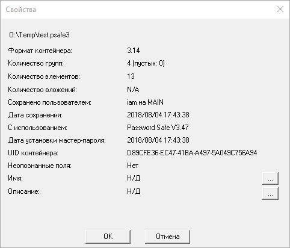
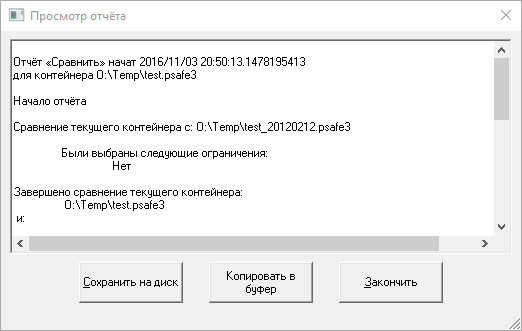

Через меню Файл выполняются действия, связанные с управлением и созданием контейнеров Password Safe.
Создать новый контейнер Password Safe.
Открыть существующий контейнер Password Safe. При открытии файла можно указать режим «только чтение» или «чтение/запись». После открытия контейнера текущий статус отображается в строке состояния. В любой момент времени можно дважды щёлкнуть на этом сегменте строки состояния и переключить режим. Также это можно сделать через меню «Файл». Переключение в режим «чтение/запись» невозможно, если другой пользователь уже открыл контейнер в режиме «чтение/запись». Также вы можете переключить режим доступа к контейнеру через это меню.
Закрыть текущий контейнер, но не выходить из приложения.
Если включено сворачивание в область уведомлений, для разблокировки в контекстном меню значка нужно будет выбрать пункт «Разблокировать» или «Восстановить». В противном случае нужно нажать левой кнопкой мыши по кнопке приложения в панели задач. Затем потребуется ввести мастер-пароль. Кнопка блокировки также может быть добавлена на панель инструментов (щёлкните правой кнопкой по панели для доступа к настройкам).
Данное подменю может содержать список недавно использованных контейнеров. Подменю может быть пустым, если Password Safe запускается в первый раз.
Примечания:
Сохранить изменения в текущем контейнере. Если с момента предыдущего сохранения не было изменений, или, если контейнер открыт в режиме «только чтение», данный пункт меню будет заблокирован.
Сохранить текущий контейнер под другим именем или в другом каталоге.
Экспортировать содержимое открытого контейнера в другой файл в формате предыдущих версий Password Safe, XML-файл, или как простой текст. Если активен фильтр, то можно экспортировать отобранные элементы в текущий формат Password Safe. В этом случае, если ярлык или псевдоним попали в результаты отбора, то соответствующий исходный элемент тоже будет экспортирован, независимо от того, удовлетворяет он условиям фильтра, или нет. Подробная информация о сохранении в другие форматы содержится здесь.
Импортировать в текущий контейнер содержимое ранее экспортированного или правильно составленного текстового файла, XML-файла или контейнера KeePass V1. Подробная информация об импорте из текстовых форматов содержится здесь.
Слияние контейнера Password Safe или резервной копии контейнера («.bak») с текущим контейнером. Заблокировано, если контейнер открыт в режиме «только чтение». Для слияния используется мастер. В нём также можно задать расширенные условия отбора, позволяющие ограничить набор элементов и полей для слияния с текущим контейнером.
Сравнить содержимое открытого контейнера с другим контейнером. Для сравнения используется мастер. В нём также можно задать расширенные условия отбора, позволяющие ограничить набор элементов и полей для сравнения. Подробная информация об отображении результатов содержится здесь.
Синхронизировать содержимое открытого контейнера с другим контейнером.
Основное различие между слиянием и синхронизацией состоит в том, что во время слияния все элементы из выбранного контейнера переносятся в открытый. При синхронизации происходит обновление лишь тех элементов, которые присутствуют в открытом контейнере. Для синхронизации используется мастер. В нём также можно задать расширенные условия отбора, позволяющие ограничить набор элементов и полей для синхронизации.
Чтобы защитить контейнера, открытый в режиме «чтение/запись» (по умолчанию), от случайных изменений, выберите пункт меню Переключить в режим только чтение (R-O). Аналогично, контейнер, открытый в режиме «только чтение» может быть переведён в режим «чтение/запись» выбором пункта меню Переключить в режим чтение/запись (R-W). При переключение в режим «чтение/запись» будет запрошен мастер-пароль. Также, для переключения между этими режимами можно дважды щёлкнуть на надписи R-W (R-0) в строке состояния.
Примечание. При работе с большими контейнерами операции слияния, сравнения и синхронизации могут занять значительное время.
Отображение информации о текущем контейнере: версия формата файла, количество групп, количество элементов, данные о том, когда и кем было произведено последнее сохранение.
Закрытие Password Safe. Если с момента последнего сохранения контейнер был изменён, вам будет предложено сохранить его.
Примечание. По окончании сравнения, экспорта, импорта и синхронизации создаётся отчёт, содержимое которого можно просмотреть и скопировать в буфер обмена или сохранить на диск в том же каталоге, где находится контейнер. Отчёт можно посмотреть позже с помощью меню Вид→Отчёты. Отчёт имеет фиксированное имя, зависящее от его типа. При повторении действия и сохранении отчёта на диск, предыдущий отчёт для этого действия перезаписывается. Примечание. Отчёт может содержать важные данные, поэтому возможность сохранения на диск следует использовать с осторожностью.
